Sunday 6th July - Tuttlingen to Donauschingen - 23.3 miles - 449 ft. I was up at 7:00 and walked into town to buy bread rolls for lunch. We had breakfast in the hotel restaurant before returning to the room to start packing up our things. We will be leaving the car in Sigmaringen so had to sort out what to put in the panniers and what to leave here.
We checked out just before 10:00. We left the car parked outside the hotel and cycled back to the station again. The plan today was to get the same train that we had tried to get on yesterday but this time to Tuttlingen. Today everything went a bit more smoothly and the train left on time at 10:34. We arrived in Tuttlingen about 45 minutes later and cycled down to the Donauradweg again.
We cycled up-river to Donaueschingen, the source of the Danube, a journey of about 23 miles. The scenery today was not as spectacular as yesterday and the weather was a lot worse. For the first time in a few weeks, it was starting to feel a bit cold and we had a couple of stops because of rain.
It is all a bit confusing about how The Danube splits and disappears underground at one point and yet continues to flow further down, but it is all quite interesting. We got to a point where the river was totally dry and also went to look at the point where the two rivers join to form the "start of The Danube".
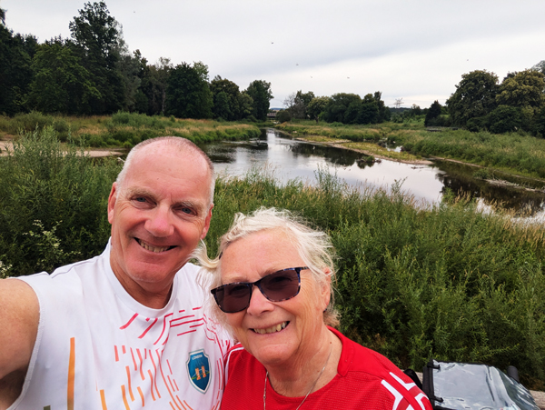
We cycled into Donaueschingen and went to look at the starting point of the Donauradweg. We now only have a section of about 20km to complete before we will have done the whole route. We had a quick look at the Donauquelle, the karst spring that is also considered the start of The Danube but could not really get down to look at this properly with our bikes. We then had a ride of about a mile and a half to get to where we staying - Pension Jägerhaus. It is a bit of a way out of the town and up a hill but we have a very nice apartment again.
We had showers and started walking back into town at 4:30. Although we are a bit out of the way, it is only about a 25 minute walk to the start of the old town and another 10 minutes to the Donauquelle. Without the bikes, we could have a proper look at it. The spring is in a lovely setting and it was again, quite a strange feeling seeing the source having so recently seen the river in Bratislava, Vienna and Budapest.
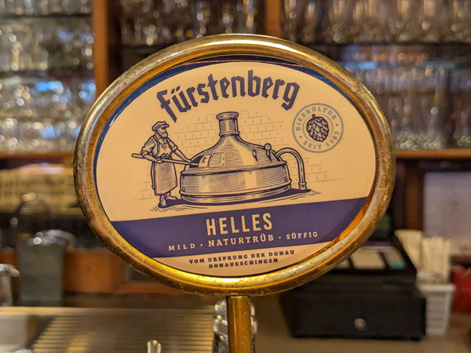
After spending 10 minutes or so taking photos, we headed to the Fürstenberg Bräustüble. This was a fantastic Bavarian type place in a lovely setting on the Brigach River. We got seats by the bar (it was getting cold outside) and had a few beers and excellent meals. If we had not had a mile and a half walk to get home, we would probably have stayed longer but it was a very enjoyable few hours and probably a good time to leave as we are planning on cycling about 40 miles tomorrow. We were back in the room by about 9.
Monday 7th July - Donaueschingen to Beuron - 41.9 miles - 844 ft. I got up just after 7:00 and walked to Lidl, about a mile away, to buy breakfast. Our plan for today was to cycle 40 miles to Beuron and in doing so complete the only part of the Donauradweg that we had not done. We knew the weather forecast was not great for today. It was not raining by the time we had finished breakfast so we packed up our things and got going straight away. We left Pension Jägerhaus at 9:00.
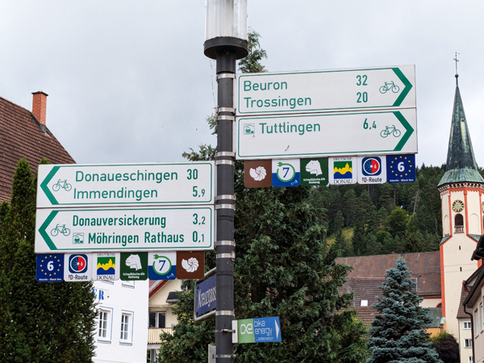
We cycled down into the old town and to the starting point of the Donauragweg. We had a ride of about 23 miles back to Tuttlingen. The weather was OK to start with but it started raining after about six miles. After about another mile, it got heavier and we had to shelter next to a farm building. When it eased we went a bit further but had to shelter again within less than a mile. Once it stopped, we were able to get to Tuttlingen without any further stops.
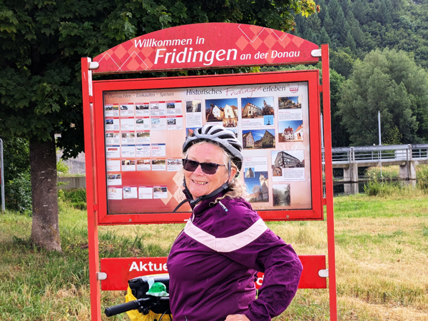
From Tuttlingen, we started on the 9 or 10 mile section to Fridingen which was the only section we had not done before. We had some rain on the way but it was not too bad and we made it into Fridingen just before 1pm.
We cycled back to the ReWe I had visited on Saturday and had lunch from the bakery. We bought a few bottles of wine and then completed the last 10km of todays journey to Beuron. We cycled down to our apartment which is next to the railway station. We had to wait about 10 minutes before we were able to get into it but we were given another bottle of wine for the inconvenience.
We had thought of getting the train and going back to Fridingen for a few drinks as there is not a lot of options in Beuron, but once in the apartment we were quite happy to stay there for a while. It must be one of the biggest apartments we have ever stayed in so sitting around not doing anything for an hour or two was more appealing than dashing out to get a train. We were joined for the afternoon by Wolfi, the apartment owner's daughter's cat.
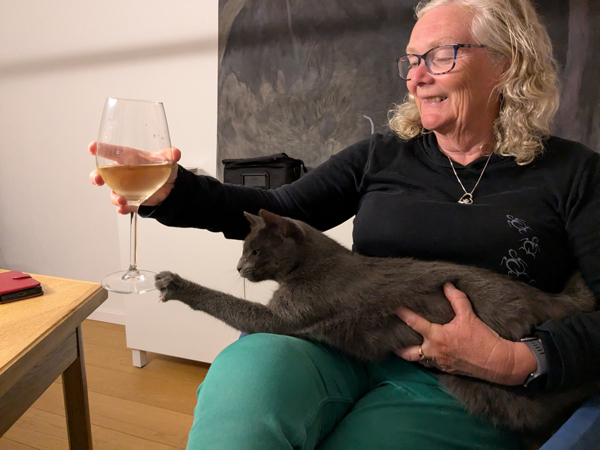
In the evening we walked up to Restaurant Pelikan. On their website, this place had looked a bit upmarket and formal but it had looked OK as we had cycled past earlier which was one of the reasons we had decided against going back to Fridingen. As it was, it was fine. We ate there and had a few beers before returning to the apartment where we got through a couple of bottles of wine while joining the J-Team video call.
Tuesday 8th July - Beuron to Sigmaringen - 19.2 miles - 821 ft. We were awake at 9ish and on our way by 9:50. We had been undecided about whether to return to Sigmaringen by bike or train as the weather forecast for today was not great. However, when we woke up it was dry and slightly warmer than expected so decided to cycle. Although we had only done this section a couple of days ago, it is one of the most scenic bits and it was another enjoyable ride.
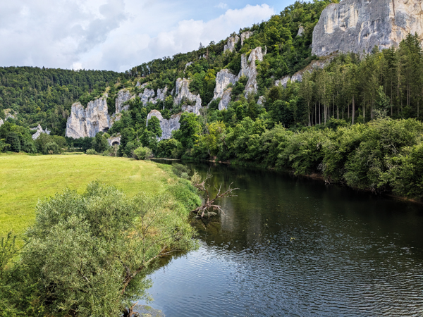
We were back in Sigmaringen just before midday and had our final view of The Danube for this trip. We collected the car from where we had left it and then drove to Aldi for a very late breakfast. After eating, we set off to our next destination, Schweinfurt. This was a drive of about three and a half hours and we arrived at the B&B just before 4:30. We had been undecided about where to leave the car for the next six nights but, after checking in, we found that we could leave the car in the underground car park by the hotel for a total of €10 which was good news.
We put our stuff in the room and then went for a quick walk round the town. I went out again for another walk while Roz watched Wimbledon for an hour or so. When the match had finished, we went out and had kebabs for tea. We were back in the room by 8:30.
Wednesday 9th July Today was supposed to be the last day of bad weather for a while. We have a lot of cycling planned for the next week or so, so were not bothered about doing much today. We had breakfast in the room, and waited until 10:30 to buy Stereophonics tickets for December. We then put most of our luggage in the car and cycled just over a mile to the station. We caught the 11:38 train to Bamberg where we arrived at about 12:30. We had another ride of just over a mile to the Ibis Hotel in the old town. We checked in and locked up our bikes in the garage.
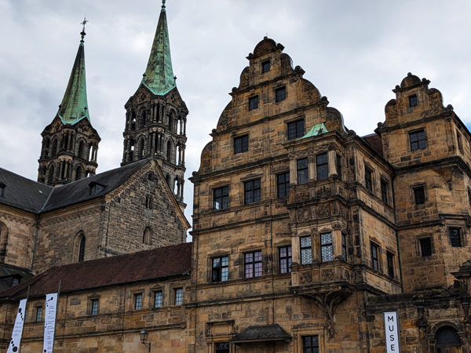
We went straight out for a look round the old town. We were staying close to the Town Hall so went there first before walking up to the castle area and The Residence. All very nice as usual. We bought Leberkäse sandwiches for lunch and then headed for our first breweries of the day. We headed first to the area just out of town that we had been to with Hoggy and Dave a couple of years ago. We had drinks in each of the two breweries there - Brauerei Keesmann and Mahr's Bräu.
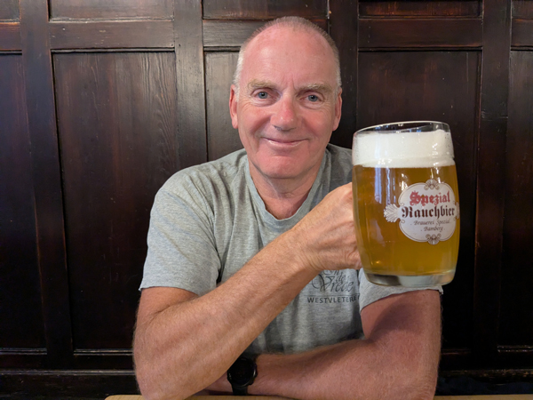
We then walked back and had one in each of Brauerei Fässla and Brauerei Spezial before going back into the old town to Klosterbräu. Things started going a bit downhill from here as we had not really had enough to eat for the amount we were drinking. We had a few in Schlenkerla, the rauchbierbrauerei and one more in Hofbräu before returning to the hotel by 9:00. Neither of us remember too much about our final beer of the night in the hotel.
Thursday 10th July Bamberg to Schweinfurt - 38.3 miles - 405 ft. We were up at about 9:00 and went out for breakfast at a cafe. We had another walk around a few of the sights and went to buy a few things from the shop that sold Fässla merchandise as it had been closed when we tried to visit last night.
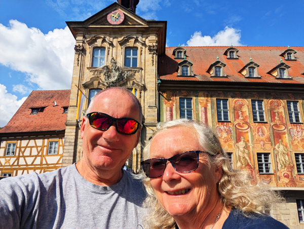
As per the forecast, the weather had improved sufficiently today for us to be able to cycle back to Schweinfurt. We checked out and were on our way by 11:00. The first half of the ride we had done before in 2012. We headed out along the Main - Donau canal and joined the Mainradweg about 3 or 4 miles outside of Bamberg. Todays ride was not as spectacular as some but there were enough small towns and villages to make it interesting. We stopped for lunch in Haßfurt and were back in Schweinfurt just after 3:30.
We were staying at the Mercure this time. We checked in and then walked back to the car to get some of our bags before returning to the hotel for showers. The hotel is right on The Main and our upgrade means that we have good views of the river.
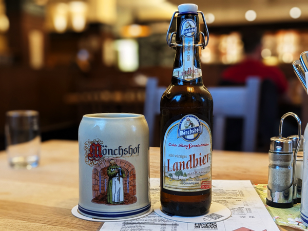
Before going out, we had our welcome drink in the hotel bar. We walked back into the centre and then spent a few hours at Brauhaus am Markt. We had meals sat outside and then moved inside when it got colder. We stayed there until it was closing and walked back to the hotel, stopping for one at Pomodoro Osteria on the way. Back in the room we had a bottle of wine sat looking at the view before bed.
Friday 11th July - Schweinfurt to Kitzingen - 36.2 miles - 526 ft. I got up and walked back to the car for a couple of things. I bought breakfast from ReWe and returned to the room. We were in no great hurry to leave today so stayed in the room until 11:00. We left our bags with the hotel reception as we will be returning here on Sunday and headed off on our bikes again.
We crossed the river and got on the Mainradweg again and it was another enjoyable easy ride down to Kitzingen. As with yesterday, the scenery was not stunningly spectacular but was all very nice. We were cycling through a big wine producing area so there were plenty of nice villages and towns to go through. We stopped for lunch at Schwarzach and arrived in Kitzingen at about 3:30.
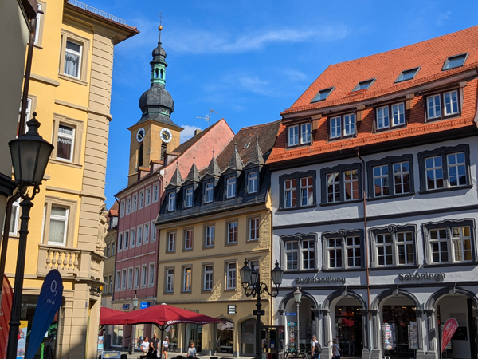
We found our way to our apartment and let ourselves in. We put a load of washing straight on and I went out for a walk while Roz watched Wimbledon again. We both went out at 6ish for a walk round the town and also out to a supermarket to buy food for tonight.
Today was a night off alcohol so we ate on our terrace and had an early night.
Saturday 12th July - Kitzingen to Karlstadt - 40.6 miles - 325 ft. I was up not long after 7:00 and walked to ReWe to buy stuff for breakfast and bread for lunch. We ate in the apartment then packed up our things and loaded everything onto the bikes. We set off at 9:00 and cycled down the hill to the old town and then over the river on the Mainradweg again.
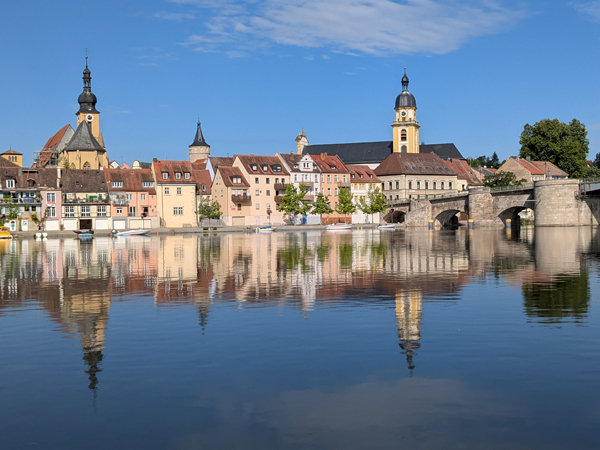
The route was not great for the first 10 miles or so as it went through a lot of industrial areas. However it improved after that and was all quite enjoyable again. We had our first stop in Ochsenfurt then continued to Würzburg where we stopped to take photos of the old town and bridge. After Würzburg, it was 17.5 miles to Karlstadt. We had one more stop for lunch and arrived in Karlstadt just before 2pm.
We had booked a room at Hotel Alte Brauerei. We found it easily as it was just at the end of the bridge when we crossed into the town. There was a bit of a delay while they got our room ready but we were in just after 3.
It had not looked as if there was too much going on in Karlstadt but this weekend the town was celebrating its 825th anniversary. The whole of the old town was lined with benches with places serving food and drink. There was a stage in the main square and generally a party atmosphere.
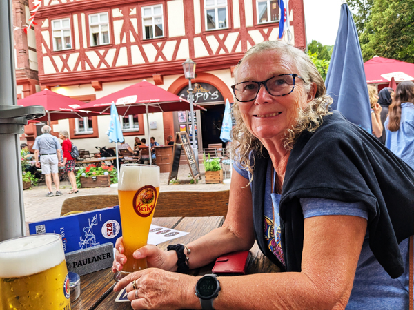
We went out to join the festivities after showering. We started at one of the stalls selling currywurst and beer and then moved to Karschter Eck, a more traditional pub type place. After a couple in there we had another beer from one of the stalls. By this time, we were starting to lose enthusiasm for the celebrations. The place where we were drinking did not have toilets, the next place we tried would only let us sit inside if we were eating and everywhere was getting very busy.
We found Wirtshaus Alt Franken where they were happy to serve us drinks sat at the bar. It took a while to get our first drinks but after that they were quite quick so we stayed there for a few hours. We got talking to a local couple in there and were both pissed by the time we left. We made a bit of an attempt to get more drinks when we got back to the hotel but we did not really need anymore. Both in bed by about 10.